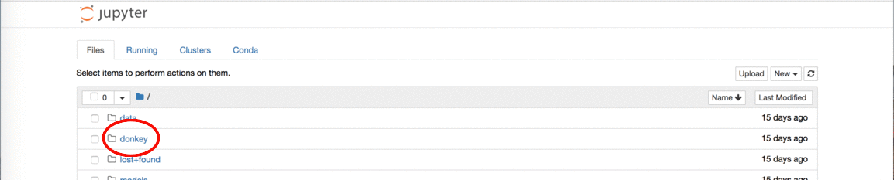

ソフトウェアのインストール
このガイドは、あなたが選んだホストPCのオペレーティングシステムにおいて、Raspberry Pi で Donkey 実行ソフトウェアをセットアップするために役立ちます。
ホストPCとは、Donkey Carを手動運転して入手した学習データをもとに機械学習アルゴリズムのトレーニング処理を実行するPCのことです。Donkey Car上のRaspberry Piを安全に停止させるには、WiFiルータ経由でSSH接続する必要がありますが、このときにも使用します。また、後述のシミュレータを動かす場合にも使用します。
SageMaker はAWSサービスの一つで、クラウド環境上でトレーニング処理を行う場合に使用します。有効なキャッシュカード情報が登録されているAWSコンソールへ接続可能なアカウントが必要になります（当然、有料です）。
Raspberry Pi の起動
車載コンピュータ(Raspberry Pi)をインターネットに接続する必要があります。最速の方法は、Donkey Car のために作成されたディスクイメージを使用することです。
香港キットには、すでに起動可能なSDカードが同梱されていますが、バージョンが古い場合があるため、以下の作業で最新版を使用することを勧めます。
ブート可能なSDカードを作成するためにディスクイメージを使用する方法は、オペレーティングシステムによって異なります。これらの手順はUbuntuのためのものですが、 ここ で詳しい手順を見ることができます。
- Raspberry Pi Zero 用と Raspberry Pi 3B および 3B+ 用のあらかじめ作成されたZipディスクイメージをダウンロードします(約1.1GB)。
- ディスクイメージを解凍します。
- SDカードをコンピュータに接続します。
- "Startup Disk Creator"アプリケーションを開きます。
- 解凍済みのソースディスクイメージを選択します。
- 使用するディスクとしてSDカードを選択します。
- 「起動ディスクを作成(Make Startup disk)」をクリックします。
Raspberry Pi の最初の起動時にWiFiをセットアップ
あらかじめ特定のファイルを作成することで、最初のブート時にWiFiルータへ接続する設定を組み込みことが出来ます。詳細は こちら を参照するか、次のウォークスルーを実行してください。
Windowsでは、メモリカードのイメージが焼いてメモリディスクが挿入されたままで、2つのドライブが表示されます。実際には2つのパーティションがmemディスクにあります。 1つは boot というラベルが付けられています。 MacとLinuxでは、memディスクの boot パーティションにもアクセスする必要があります。 これは一般的なFATタイプで構成され、最初の起動時に Wi-Fi を検索してログオンする設定ファイルを編集します。
- テキストエディタの起動：Linux では
geditコマンド、Windowsではメモ帳、MacではTextEditを起動します。 - 用意したWiFiに合うようにこの内容をペーストし編集します：
country=US
ctrl_interface=DIR=/var/run/wpa_supplicant GROUP=netdev
update_config=1
network={
ssid="SSID名をここに入力"
psk="SSIDピンコードをここに入力"
}
SSID名をここに入力 をネットワークIDに置換してください。引用符を残してください。ネットワーク名に "Joe's iPhone"のようなアポストロフィが含まれていたときに問題が発生します。注意してください。
SSIDピンコードをここに入力 をパスワードを引用符で囲んで置換します。パスワードを暗号化せずに残しておきたい場合は、piを起動して ログインした後に内容を変更 することができます。
- このファイルを boot パーティションのルートにファイル名
wpa_supplicant.confで保存します。最初の起動時に、このファイルは、後で編集可能な /etc/wpa_supplicant/wpa_supplicant.conf というファイルに移動されます。
Raspberry Piのホスト名をセットアップ
ホスト名を設定して、ネットワーク上でPiを簡単に見つけられるようにすることもできます。ネットワーク上に唯一存在するRaspberry Piであるなら、以下のコマンドで見つけることができます 。
ping donkeypi.local
Rsaspberry Pi はすくなくとも一度はデフォルトのホスト名でブートします。ネットワーク上に他にも多くの Raspberry Pi が接続されている場合、問題があります。Linuxマシンを使用している場合、またはUUIDパーティションを編集できる場合は、これらのファイル /etc/hostname とファイル /etc/hosts を編集して、ブート時にネットワーク上の pi を簡単に見つけるようにできます。あなたの選択した名前で raspberrypi を置換します。すべての小文字、特殊文字、ハイフン、アンダースコア(_)は使用しないでください。
sudo vi /media/userID/UUID/etc/hostname
sudo vi /media/userID/UUID/etc/hosts
これでSDカードは準備完了です。あなたのコンピュータから取り出して、Raspberry Piに差し込みます。
香港キットを使っている場合は、天板の穴からSDカードを抜き差しします。
Raspberry Pi へ接続
WiFiアクセスを追加するための上記の指示に従った場合、Raspberry PiはWiFiネットワークに接続されるはずです。SSH経由で接続するにはIPアドレスを見つける必要があります。
Ubuntu上で最も簡単な方法は、 donkey findcar コマンドを使うことです。ping donkeypi.local を試してください。ホスト名を変更した場合は、 ping <your hostname>.local を試してください。これはWindowsマシンでは失敗します。Windowsユーザは完全なIPアドレスが必要になります（cygwinを使用しない限り）。
Raspberry Piをネットワーク上に配置する際に問題がある場合は、HDMIモニタとUSBキーボードをPiに接続して起動します。ログインするには以下のアカウントを使用します：
- ユーザ名: pi
- パスワード: raspberry
香港キット同梱のSDカードをそのまま使用している場合は、上記のパスワードではなく asdfasdf となります。
次に、以下のコマンドを試してください:
ifconfig wlan0
有効なIPv4アドレス、4つの数字のグループがドットで区切られている場合は、SSHコマンドでそれを試すことができます。表示されない場合は、WiFi設定に間違いがある可能性があります。次のコマンドで設定を確認し修正してください：
sudo nano /etc/wpa_supplicant/wpa_supplicant.conf
HDMIモニタとキーボードがない場合は、CAT5ケーブルを使用して Raspberry Pi を DHCP 付きルータに差し込むことができます。そのルータがPCと同じネットワーク上にある場合は、次のコマンドを試すことができます：
ping donkeypi.local
Hopefully, one of those methods worked and you are now ready to SSH into your Pi. On Mac and Linux, you can open Terminal. On Windows you can install Putty or one of the alternatives.
If you have a command prompt, you can try:
ssh pi@donkeypi.local
or
ssh pi@<your pi ip address>
or via Putty:
Username: pi
Password: raspberry
* Hostname:<your pi IP address>
もしくは Putty を介して次の項目を入力します：
ユーザー名： pi
パスワード： raspberry
* ホスト名： 割り当てられたIPアドレス
上記の事前構築済みのイメージを使用している場合、Piはすぐに使用できます。mycar および donkey ディレクトリが表示されます。
注意:
config.pyをチェックして、ステアリングとスロットル用の PWM チャネルの設定が正しいことを確認してください。nano ~/mycar/config.pyを開き、以下の行が表示されていることを確認してください：
- STEERING_CHANNEL = 1
- THROTTLE_CHANNEL = 0
右辺の値
1と0は、サーボ/ESC のリード線をPCA9685ボード(サーボシールドのこと)に接続したチャンネルにも一致していなければなりません。通常、これは0〜15の範囲であり、ボード上で番号が付けされています。注意: 上記で指定した事前作成済みのイメージを使用している場合、Raspberry Pi は SD カードの全容量を使用していません。完全な容量にアクセスできるようにするには、SSH で Pi に接続し
sudo raspi-configを実行して設定ツールに入ります。7 Advanced OptionsとA1 Expand Filesystemを選択します。次に<Finish>を選択して設定ツールを終了して再起動します。これでRaspberry Pi はSDカードの全容量にアクセスできるようになります。
donkeycar パッケージのインストール
(本手順により作成したSDカード上の)ディスクイメージには、ライブラリ（tensorflow ..）のみがインストールされており、Pythonパッケージである donkeycar パッケージはまだインストールされていません。
pip install donkeycar[pi]
# donkeycarパッケージの(__init__ ファイル内にある)バージョン番号を表示するテストを実行しています
python -c "import donkeycar as dk; print(dk.__version__)"
あなたの車用アプリケーションの作成
今度は、あなたのラップトップやサーバ(ホストPC)に同じ donkeycar ライブラリをセットアップして、オートパイロットをテストしトレーニングしましょう。インストールはプラットフォームによって異なります。
donkey createcar ~/mycar --template donkey2
Raspberry Pi側と同じバージョンの donkeycar パッケージをホストPCにインストールすると、オートパイロットのトレーニング処理をホストPC上で実行することが出来ます。なおインストール手順は、プラットフォームごとに異なっています。
Linuxにdonkeycarをインストール
virtualenvをインストールし、依存関係をセットアップします。
sudo apt-get install virtualenv build-essential python3-dev gfortran libhdf5-dev
virtualenv env -p python3
source env/bin/activate
pip install tensorflow==1.8.0
-
donkeyコードをインストールし、ローカルワーキングディレクトリを作成します。 -
Install donkey source and create your local working dir:
git clone -b master https://github.com/wroscoe/donkey donkeycar
cd donkeycar
pip install -e .
Windowsにdonkeycarをインストール
- miniconda Python 3.6 64 ビット をインストールします。チェックボックスをオンにして、システムパス変数を変更してcondaを追加できるようにしてください。
訳者は Anaconda を使用しています。
-
git 64 ビット をインストールします。
-
Anacondaプロンプトを立ち上げます。
-
プロジェクトディレクトリを作成し、移動します。
mkdir projects
cd projects
- GitHubより最新の
donkeyコードを取得します
git clone -b master https://github.com/wroscoe/donkey
cd donkey
- Python Anaconda 環境を構築します。
conda env create -f install\envs\windows.yml
activate donkey
donkeyソースをインストールし、あなたの車用アプリケーションを構築するためのディレクトリを作成します：
pip install -e .
donkey createcar ~/mycar
注意: Anaconda Prompt を終了させた後で、再度起動したときには、
activate donkeyとタイプして donkey パッケージ環境を再度有効にしてください
Macにdonkeycarをインストール
-
miniconda Python 3.6 64 ビット をインストールします。
-
git 64 ビット をインストールします。
-
ターミナルを起動します。
-
If Xcode or gcc not installed - run the following command to install Command Line Tools for Xcode. Xcodeもしくはgccがインストールされていない場合は次のコマンドでXcode用コマンドラインツールをインストールします。
xcode-select --install
- プロジェクトディレクトリを作成し、移動します。
mkdir projects
cd projects
- GitHubから最新の
donkeyコードを取得します。
git clone -b master https://github.com/wroscoe/donkey
cd donkey
- Python anaconda 環境を作成します。
conda env create -f install/envs/mac.yml
source activate donkey
- Tensorflow をインストールします。
pip install https://storage.googleapis.com/tensorflow/mac/cpu/tensorflow-1.3.0-py3-none-any.whl
donkeyソースをインストールして、あなたの車用アプリケーションを構築するためのディレクトリを作成します。
pip install -e .
donkey createcar ~/mycar
注意: ターミナルを一旦終了させた後で再度開く場合は、
source activate donkeyを実行してdonkey環境を再度有効にしてください。
AWS Sagemakerにdonkeycarをインストール
イントロダクション
次の手順は、 AWS SageMaker Notebook インスタンス に donkeycar パッケージをインストールする方法をしめしています。
Notebook インスタンスは、通常、独自データやモデルをつかって実験やトレーニングをおこないモデルを調製するために使用されます。コンベンションでは、個別のtrainingインスタンスのクラスタにトレーニングを配布します。しかしこれは、トレーニングスクリプト（およびモデル）を分散型で動作するように調整する必要があります。 SageMaker Python SDK を使用するのが望ましいですが、Donkeyでは今のところ利用できません。
Notebookインスタンスにモデルをインストールしてトレーニングすることは可能です。大規模なGPUを備えた軽量のインスタンスタイプを使用して Kerasモデル を訓練することができます。そして、おそらく最も重要なことは、終了時にシャットダウンして、使用するものだけを支払うことです。
Notebook インスタンスの作成
AWS Console へログインし、新規の AWS SageMaker Notebook インスタンスを作成します：
- https://docs.aws.amazon.com/sagemaker/latest/dg/how-it-works-notebooks-instances.html#howitworks-create-ws
ml.p2.xlarge インスタンスタイプを推奨します。有効なインスタンスタイプは次のURLを開いて確認してください:
- https://aws.amazon.com/sagemaker/pricing/instance-types/
SageMakerでgit cloneコマンドを実行しdonkeyコードを取得
When you've created your new instance, open it up and create a new Jupyter Notebook (click New, conda_tensorflow_p36).
- 最初のセル上で次のコマンドをタイプしてください:
!git clone -b master https://github.com/wroscoe/donkey ~/SageMaker/donkey
- Close the Jupyter Notebook をクローズします(インスタンスではない!)。必要に応じて削除することができます。
SageMakerへdonkeyコードをインストール
git clone した後、SageMaker Notebook のルートディレクトリにある donkey フォルダを見つけることができます：

- donkey/docs/guide/sm-install-donkey.ipynb を開き、次の手順に従ってください。
donkeycar パッケージの他のフォークのインストール
時折、donkey の別のフォークからの変更を実行したいことがあります。1つをアンインストールして別のものをインストールすることができます。これは最速ですが、フォークされたバージョンのみがインストールされています：
pip uninstall donkeycar
git clone --depth=1 https://github.com/<username>/donkey donkey_<username>
cd donkey_<username>
pip install -e .
戻したい場合、donkeyをインストールしなおします：
pip uninstall donkeycar
pip install donkeycar
TensorFlowの依存関係を使ってdonkeycarをインストール
donkey は TensorFlow ライブラリを有効にする必要があります。TensorFlow には2つのフレーバーがあります：tensorflow (CPU) と tensorflow (GPU) です。
donkey がどちらかを依存関係として指定すると、ライブラリの 他の フレーバーの pip プリインストールされたバージョンをアンインストールするため、問題を引き起こします。相互排他的なので、両方を依存関係としてリストすることはできません。
これを解決するために、 donkey は tensorflow ないしは tensorflow-gpu を依存関係として指定していません。代わりに、それらは extras_require として表示しています。つまり pip で使用したいフレーバーを明示的に指定する必要があります。フレーバーが指定されていない場合（デフォルト）、TensorFlowの 1つのバージョンがすでにインストールされているものとみなされます。
互換性のあるTensorFlowライブラリ（tensorflow または tensorflow-gpu のいずれか）が既にインストールされていると仮定して、 donkeycar をインストールします:
# カレントディレクトリにdonkey が git cloneされていると仮定
pip install donkeycar
donkeycar をインストールする際に、 tensorflow の依存関係を使用します：
pip install donkeycar[tf]
donkeycar をインストールする際に、 tensorflow-gpu の依存関係を使用します：
pip install donkeycar[tf_gpu]
詳細は https://github.com/tensorflow/tensorflow/issues/7166 を参照してください。